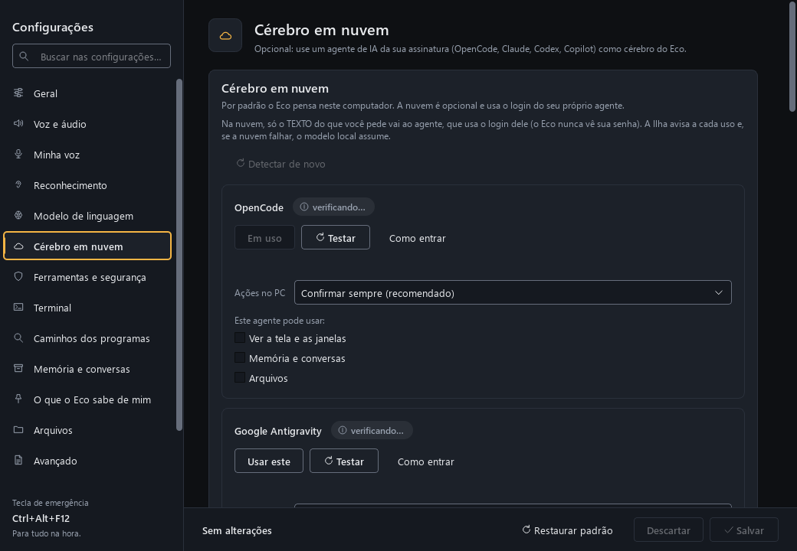
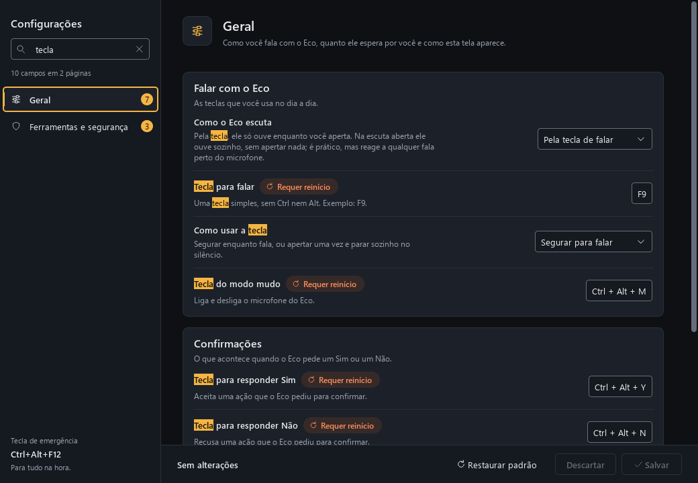
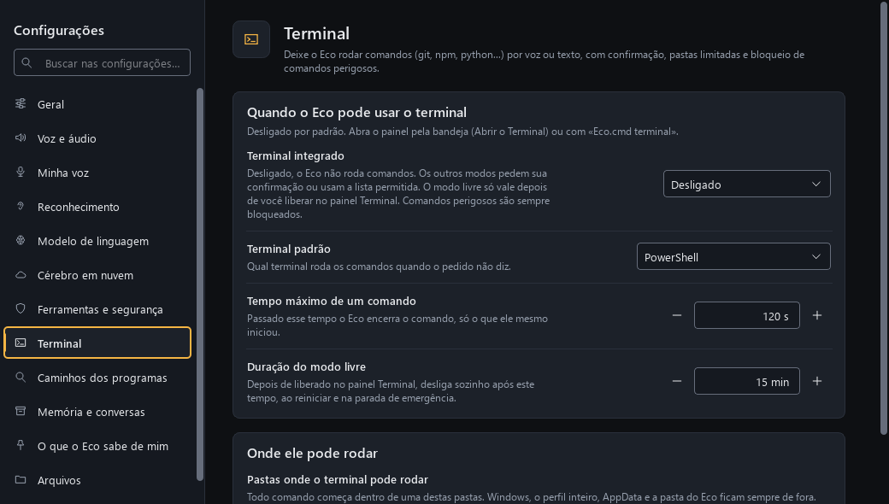

Privacidade de verdade
Voz, transcrição, modelo e memória ficam na sua máquina. Não há conta, anúncio nem telemetria. O servidor do modelo escuta só em 127.0.0.1.
PadrãoNada sai do PC
Para Windows · pt-BR · 100% no seu PC
Um assistente de voz que ouve, pensa, fala e controla o computador, com a sua voz, no seu hardware e com travas de segurança em cada ação.
Windows 10 (build 19044+) ou 11 · 64 bits
Como funciona
Cinco etapas. A única que pode usar a internet é a que você escolher ligar.
O microfone é aberto só quando você pede: segure F9 ou deixe a escuta contínua ligada. O áudio não é gravado em disco.
No PCReconhecimento de fala em português com faster-whisper ou whisper.cpp (Vulkan). O texto nasce no seu computador.
No PCUm modelo local (llama.cpp, na sua GPU) responde por padrão. Se quiser, um agente na nuvem da sua própria assinatura recebe só o texto. Se falhar, o local assume.
LocalNuvem opcionalAbrir um programa, digitar, clicar, rodar um comando. Cada ação passa por travas e, quando é nociva, pelo seu Sim ou Não.
No PCA síntese de voz (Piper) fala de volta em português natural, também local. Você interrompe quando quiser.
No PCRecursos
Voz, transcrição, modelo e memória ficam na sua máquina. Não há conta, anúncio nem telemetria. O servidor do modelo escuta só em 127.0.0.1.
Modelo e transcrição usam Vulkan. Testado em uma Radeon RX 580 de 8 GB; outras GPUs ainda não foram testadas.
Ferramentas em lista permitida, digitação só em programas autorizados, apagar vai para a Lixeira e há tecla de emergência.
Opcional e desligado por padrão: rode git e outros comandos por voz, com lista permitida, comandos sempre bloqueados e confirmação.
A resposta é falada pelo Piper, local, com normalização de números, horas, datas e siglas. Aperte F9 para interromper.
Conecte o OpenCode, o Antigravity, o Claude Code, o Codex ou o Copilot pelo protocolo ACP, usando o login que você já tem. Só texto vai para a nuvem, a Ilha avisa a cada uso e as mesmas travas locais continuam valendo.
Uma pílula discreta mostra o estado, as ondas da voz e os botões Sim e Não. Some em tela cheia.
Aviso de versão nova, download com retomada e instalação por cima com conferência de SHA-256. Você pode desligar.
Conversas e preferências em SQLite local. Veja, edite ou esqueça tudo, ou use o modo sem histórico.
Segure F9 e fale, ou ligue a escuta aberta (Ctrl+Alt+L) para o Eco ouvir sem apertar nada. Mute com Ctrl+Alt+M.
Por dentro
Busca com realce, seções em cartões e tudo explicado em português.



Capturas ilustrativas; as imagens finais seguem a identidade Eco.
Segurança e privacidade
Requisitos
Download
SHA-256 do instalador:
—
No PowerShell, na pasta do download:
Get-FileHash .\Eco-Setup-<versão>.exe -Algorithm SHA256O resultado deve ser idêntico ao hash acima. Se for diferente, apague o arquivo e baixe de novo.
O instalador ainda não é assinado digitalmente: o SmartScreen do Windows pode avisar “editor desconhecido”. Por isso o hash acima existe.
Perguntas frequentes
Sim, depois de instalado e com os modelos baixados. Só os recursos opcionais (agentes na nuvem e verificação de atualização) usam a internet.
Não. O Eco não tem conta. Para usar um agente na nuvem você usa o login que já tem nele; o Eco nunca vê a sua senha.
Só com as ferramentas permitidas e dentro das travas. Ações nocivas (apagar, mover, editar arquivos, fechar janelas) pedem o seu Sim, e Ctrl+Alt+F12 para tudo na hora.
Usa Vulkan, então em teoria sim, mas só foi testado em uma Radeon RX 580. Se não houver Vulkan, cai para a CPU, que é bem mais lenta.
É o padrão. O cérebro em nuvem é opcional, vem desligado e tem fallback automático para o local.
O instalador ainda não tem assinatura de código. Confira o SHA-256 antes de abrir.
O Eco avisa quando há versão nova e instala por cima, mantendo os seus dados. Dá para desligar a verificação nas Configurações.
Novidades
As versões anteriores foram publicadas com o nome antigo do projeto.